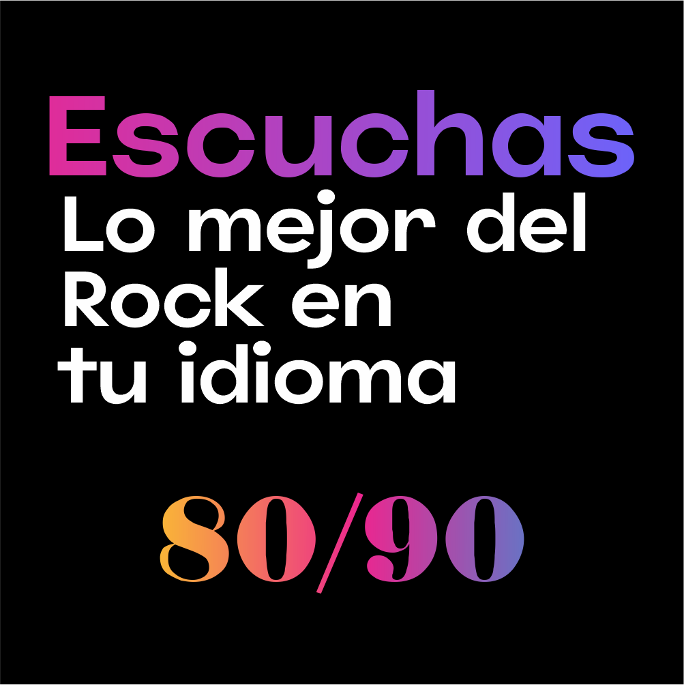

Radio online
sikodark
Detenido
Sonando ahora
Conectando…
◉ Reproducidos recientemente
Últimas canciones reproducidas
Las canciones aparecerán aquí cuando empieces a escuchar la radio.

Conectando…
Últimas canciones reproducidas
Las canciones aparecerán aquí cuando empieces a escuchar la radio.